Foto reale da inserire:
Le immagini qui sotto sono illustrazioni originali create per questo prototipo, nello stile e nei colori reali del locale. Ogni scatto è etichettato con la foto ufficiale da inserire al suo posto.
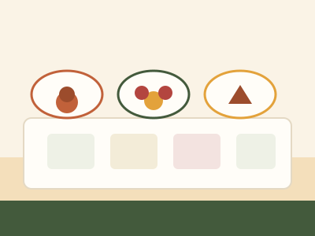
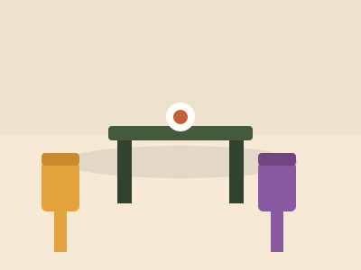
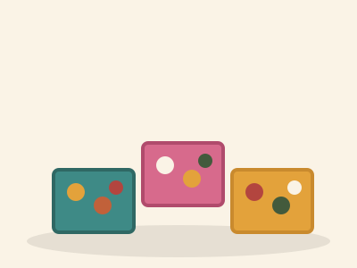
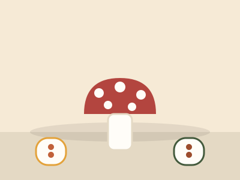
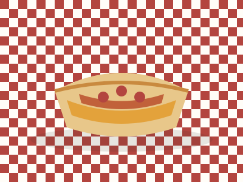
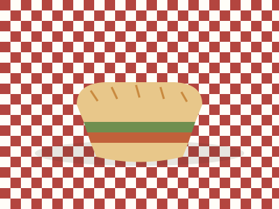
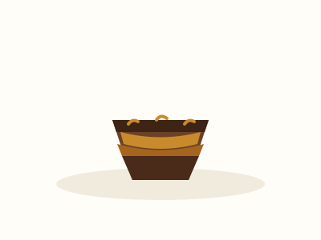
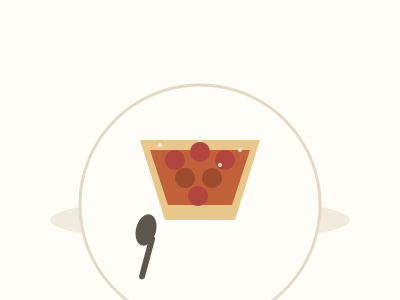
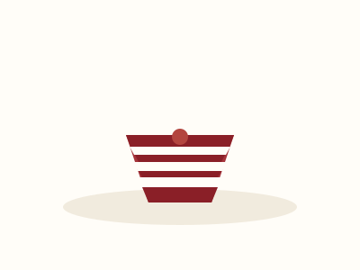
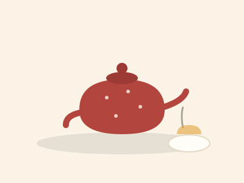
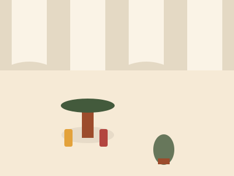
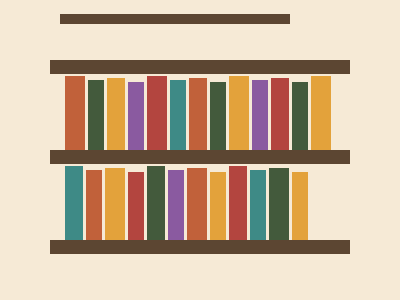
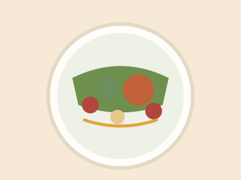
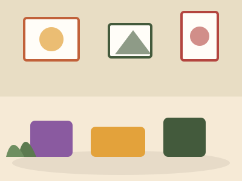
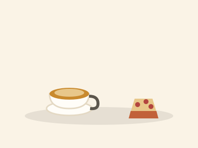
Foto reale da inserire: